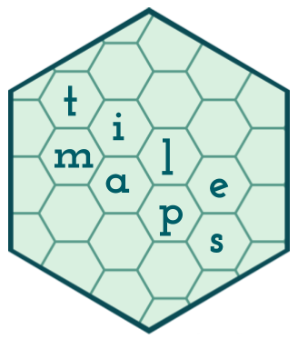

Changelog
Source:NEWS.md
Version 0.2.0
CRAN release: 2020-07-10
- Introduce
create_island()function, which allows the user to add island tiles to the layout of an existing tile map.
NEWS.md
CRAN release: 2020-07-10
create_island() function, which allows the user to add island tiles to the layout of an existing tile map.